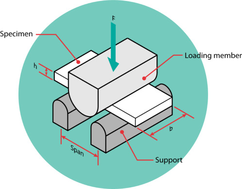

Got any Questions? Call us today!
Phone: +91-9932316960
A shear test is designed to apply stress to a test sample so that it experiences a sliding failure along a plane that is parallel to the forces applied.
The most common use of a shear test is to determine the shear strength, which is the maximum shear stress that the material can withstand before failure occurs, of a material. This is a very important design characteristic of many types of fasteners such as bolts and screws.
Techno Weld provides this type of testing which provides insight into the mechanical properties of a material and enables product designers to make informed decisions about when, where, and how to use a given material.